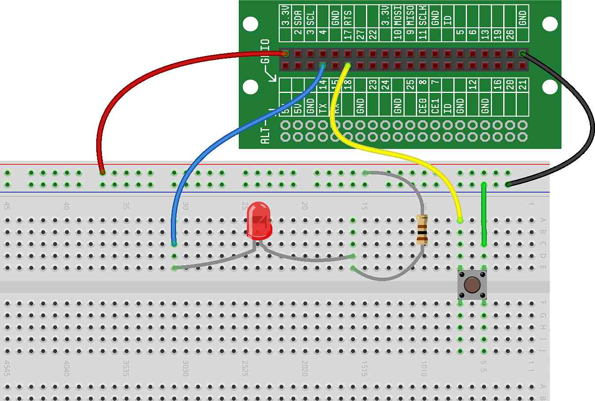

In this project, we'll put together the work we did in two of our previous
projects — getting GPIO input from a button and controlling an LED with a
GPIO output — to create a "flashlight" circuit that will illuminate an LED
when the button is pressed. The flashlight will rely on software for both the
input (reading the button) and the output (lighting the LED).
For the hardware in this project, we're going to wire two completely
independent circuits:
-
The first circuit will consist of a button wired to a GPIO (like we did
in )
-
The second circuit will consist of an LED wired to a separate GPIO (like
we did in )
Wire the LED circuit.
Let's start by wiring the LED circuit like we did in : 
We've chosen to wire our LED to GPIO14 — you can use any GPIO you like,
but if you use a different one, make sure to modify your code
appropriately.
Wire the button circuit.
Next, let's add a button circuit to our breadboard: 
In this case, we've chosen GPIO18 for our button — again, you are welcome
to use any GPIO you like, but if you use a different one, the default code
below will need to be changed.
Now that we have our LED and button circuits wired, we can write some code
to bring those circuits to life...
Write the code.
For this project, our software is going to do two things:
-
Read the state of the button (pressed or released) using a GPIO as
input
-
If the button is pressed, turn on the LED using a GPIO as output, and if
the button is not pressed, turn off the LED using the GPIO as output
Here is the code that will accomplish this:
Let's to through the code line-by-line and take a look at what it's
doing:
-
On Line 1, we import the function we will need to initialize the button
(called Button())
-
On Line 2, we import the function we will need to initialize the LED
(called Output())
-
On Line 4, we initialize our button. We call the Button()
function, which returns a "Button object" to our my_button
variable. We talked about that a bit in , but the
important thing to understand is that we can now use my_button
to call other GPIO functions that can control our button
-
On Line 5, we initialize our LED. We call the Output()
function, which returns a "GPIO Output object" to our my_led
variable. Again, we talked about that a bit in , but
the important thing to understand is that we can now use
my_led to call other GPIO functions that can control our
LED
-
On Line 7, we check the state of the button using the
is_pressed() function. This function will return True if the
button is pressed (this is done by reading the voltage at the GPIO, like we
discussed in ), and will return False if the
button is released
-
On Line 8, if the return from our if statement is True (the button is
pressed), we light the LED using the on() function
-
On Lines 9 and 10, if the return from our if statement is False (the
button is released), we turn off the LED using the off()
function
Notice that with this code, the button status is only read one time when
the program is run. So, if you want the LED to illuminate, you need to be
holding the button when you run the code. If you're not holding down the
button at the time the program is run, the code will see that the button is
released and the LED will not illuminate.
Improve the code.
To make this program more useful, we can put the code that reads the
button into a loop so that it will continually read the button state and
update the LED every time it changes. To do this, we simply put the last four
lines of the code (the lines that test the state of the button and turn the
LED on or off) in a while True: loop, like this:
Give it a try. The flashlight will continue to work until you manually
stop the program.